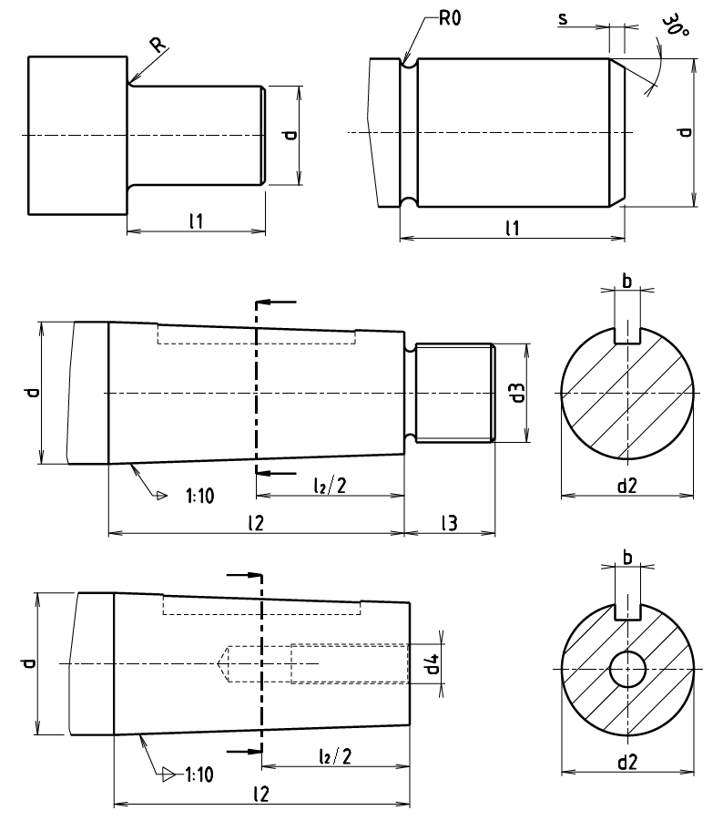

Válcové a kuželové konce hřídelů podle ČSN 01 4990 a ISO 775

- Údaje neplatí pro konce hřídelů spalovacích motorů, lodních hřídelů a ovládacích ústrojí;
- Od průměru hřídele 220 mm je u kuželových konců drážka pro pero rovnoběžná s površkou kužele;
- Vnitřní závit viz ČSN 01 4917:1192 Středící důlky se závitem;
- Velikost zápichu R0 válcového konce hřídele se volí podle ČSN 01 4960:1974 Zápichy